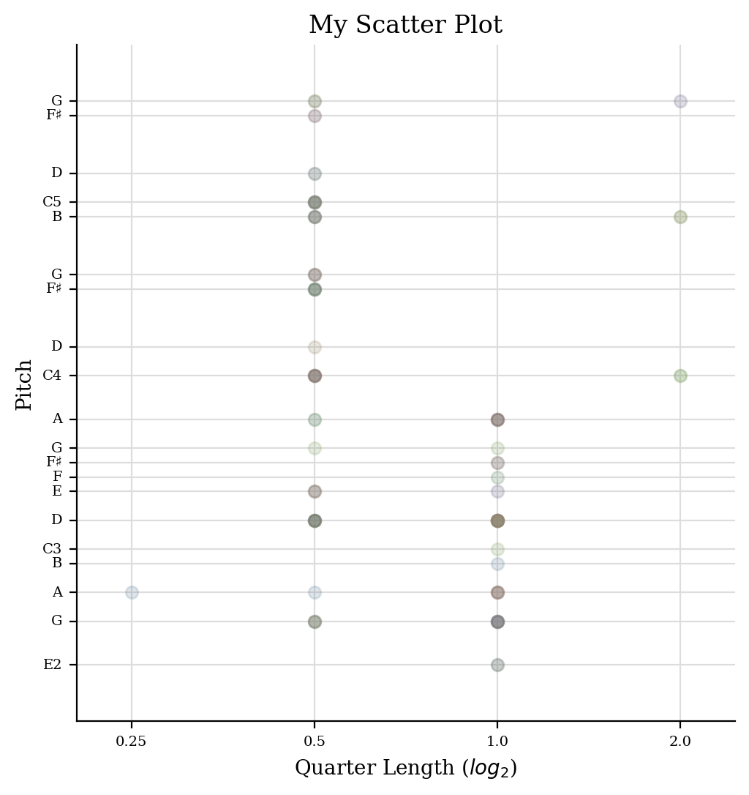
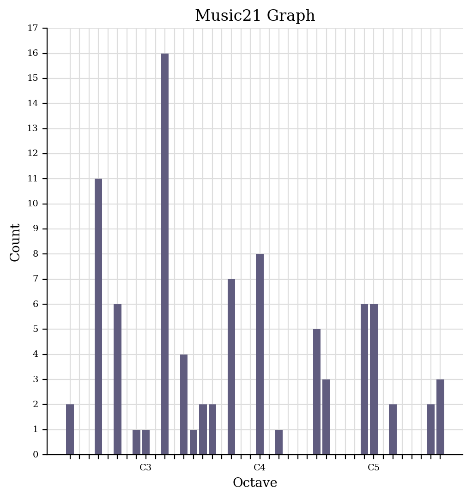
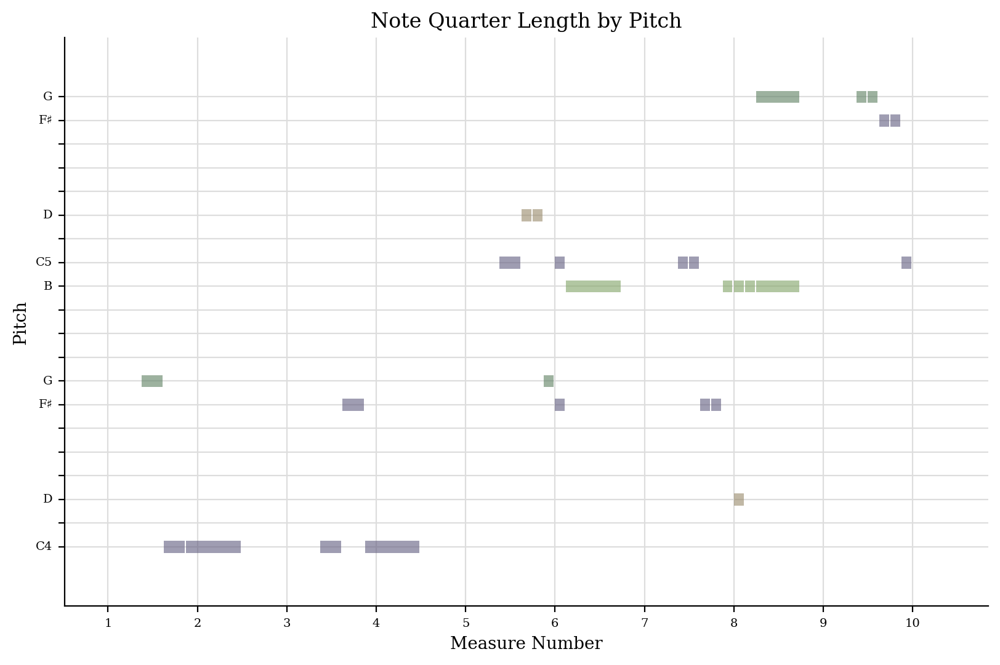

I started by running my MIDI file through jSymbolic, and exporting all the information needed for the lab task. These include range, mean pitch, most common pitch class, last pitch and most common rhythmic value.
| No one noticed | |
|---|---|
| Range | 29 |
| Mean Pitch | 57 |
| Most Common Mean Pitch | 9 |
| Last Pitch | 57 |
| Most Common Rythmic Value | 0.5 |



I extracted these analyses by following the step-by-step instructions which are on the Moodle page for the Week 4 task, inserting the code where necessary in music21, while also using jupiter notebook within the software Anaconda.